Este trabalho, desenvolvido em dupla, consiste nos relatos e análises referentes aos resultados verificados da intervenção, sob forma de oficina, realizada em duas instituições de ensino da rede pública, com alunos da segunda fase do ensino fundamental, sobre a temática Educação e Patrimônio. Atividades desenvolvidas em dupla por cursistas da Especialização Interdisciplinar em Patrimônio, Direitos Culturais e Cidadania. A intervenção, denominada Acessibilidade cultural na Cidade Goiás: construindo patrimônio das/para humanidades, primava pela conscientização desse público-alvo de que os espaços públicos da cidade, sejam tombados ou não, são de total direito de acesso seus, bem como todos os valores culturais e históricos compõem suas identidades e, como tais, as representam e devem ser representados pelas mesmas. Enquanto resultados, observou-se a carência de trabalhos referentes à patrimônio, o que tem como consequência o desconhecimento dos principais aspectos históricos, econômicos e políticos da cidade por grande parte da população. Assim, para garantir essa acessibilidade, a assumência da identidade de pertencimento à história local e a esses diversos patrimônios, bem como para o empoderamento dessa sociedade, há que se multiplicar atividades como esta, que insiram Patrimônio, Cultura, Identidades e Representações no contexto da educação. É a partir da educação patrimonial que se busca o posicionamento crítico dos indivíduos acerca da temática, numa tentativa de reconhecimetno e emancipação, aliando, portanto, educação e cultura em prol de um bem maior.
Palavras-Chave: Educação e Patrimônio. Cidade de Goiás. Marginalização Social. Acessibilidade Cultural. Empoderamento.
Alunos:
Lucas Manoel Andrade
Samantha Andrielle Moreira de Castro
Acessibilidade Cultural na Cidade Goiás: Construindo Patrimônio das/para Humanidades
Aluno: Lucas Manoel Andrade
Polo: Cidade de Goiás
Orientadora Acadêmica: Shirlene Álvares da Silva
Coordenadora de orientação: Simone Rosa da Silva
1. INTRODUÇÃO
Devido à importância do centro histórico da Cidade de Goiás para os indivíduos que nela habitam e para toda a humanidade (tanto é que culminou no reconhecimento do título de Patrimônio Histórico e Cultural da Humanidade pela Unesco, em 2001), as discussões acerca da universalização do acesso aos bens culturais tombados devem estar presentes na agenda cultural e política do município. No entanto, ao compreender o homem em sua complexidade e totalidade, reconhecendo-se as particularidades dos sujeitos e, por conseguinte, compreendendo-se a coletividade como heterogênea, impossível é considerar que a compreensão de acesso à cultura na Cidade de Goiás abarque somente a divulgação do centro histórico tombado. Deve ir para além disso.
Neste sentido, as manifestações culturais vilaboenses devem ser compreendidas em sua totalidade, para além do patrimônio institucionalmente tombado, num processo de reconhecimento de identidades e garantia de emancipação e criticidade aos sujeitos. A população da Cidade de Goiás deve, portanto, reconhecer a importância do centro histórico e as relações de poder nele estabelecidas, ao mesmo tempo em que compreende as diversas manifestações culturais presentes no cotidiano dos sujeitos, responsáveis pela identidade coletiva deste povo. Necessário é, portanto, uma ação que conscientize os sujeitos acerca desta situação.
Deste modo que se propõe oficinas de educação patrimonial que sejam capazes de discutir a acessibilidade cultural da Cidade de Goiás, pontuando-se a importância da compreensão do Centro Histórico e as relações de poder que este representa, sem desconsiderar a relevância das manifestações culturais que acontecem para além do centro histórico, já que estas também são responsáveis pelo reconhecimento das identidades dos sujeitos. Portanto, é a partir da compreensão de que a sociedade é dinâmica; o que permite com que os sujeitos se identifiquem com o seu patrimônio de maneira diferente ao longo do tempo.
57
No entanto, não se deixa de considerar que o patrimônio representa historicamente uma série de relações de poder e dominação e que deve ser preservado para que estas relações possam ser compreendidas criticamente. O processo de conscientização destas relações é de grande importância, pois, somente a partir dele, patrimônio e cultura podem ser compreendidos ao ponto de garantir aos sujeitos emancipação.
2. DESENVOLVIMENTO
É necessária a conscientização dos sujeitos acerca da acessibilidade cultural na Cidade de Goiás, de modo a compreender a importância do Centro Histórico institucionalmente tombado e das relações de poder nele conservadas, numa conjuntura que possibilite reconhecer a importância das diversas manifestações culturais que acontecem na referida cidade, em espaços alheios ao centro, mas que, de igual maneira preservam a identidade da população nela presente.
Assim sendo, realizou-se oficinas de educação patrimonial na Cidade de Goiás que viabilizaram problematizar a referida temática. Esta ação apresentou como objetivos geral e específicos, respectivamente:
2.1 OBJETIVO GERAL
Trabalhar a educação patrimonial, ressaltando a importância desta ser contínua, e primar por emancipação e empoderamento a partir da compreensão de usos e ocupações de espaços públicos na Cidade de Goiás.
2.2 OBJETIVOS ESPECÍFICOS
Ampliar a conceituação de cultura e patrimônio;
Contribuir para conscientizar a população da importância da valorização das várias manifestações culturais;
Colaborar para o processo de emancipação e criticidade do sujeito;
Contribuir para compreender a cidade como ambiente orgânico e as complexidades que dela decorrem a partir da organização e das vivências deste espaço
Colaborar no processo de reconhecimento de identidades;
Auxiliar no processo de eliminação de preconceitos e estereótipos fomentadas por uma visão etnocêntrica de cultura;
Contribuir para que o indivíduo habitante da cidade se compreenda enquanto sujeito de direitos, de modo a demandar a garantia de direitos e a melhoria de sua condição;
Compreender as relações de poder que permeiam o patrimônio histórico presente no centro da Cidade de Goiás;
Reconhecer e valorizar as manifestações culturais que acontecem nos bairros marginalizados da Cidade de Goiás.
2.3 METODOLOGIA
Com as devidas adaptações a uma proposta intervencionista, tendo como norte a metodologia da pesquisa-ação emancipatória, "que tem como meta explícita mudar o status quo não só para si mesmo e para seus companheiros mais próximos, mas de mudá-lo numa escala mais ampla, do grupo social como um todo" (TRIPP, 2005, p. 458), buscou-se, a partir da intervenção na comunidade, contribuir para a emancipação, empoderamento e criticidade dos sujeitos. Tal proposta metodológica, adaptada, foi adequada para o desenvolvimento da intervenção, pois, partindo do pressuposto que a referida metodologia é consequência da pesquisa-ação política, o que se buscou foi a compreensão do indivíduo enquanto sujeito de direitos, principalmente no que diz respeito aos direitos culturais e sua eficácia e aplicabilidade.
A metodologia utilizada, portanto, levou em conta a realização de uma oficina de educação patrimonial que fosse condizente com a realidade dos indivíduos a qual seria aplicada. Neste contexto, foi proposta a execução de oficinas de caráter conscientizador e instigador, nas quais os envolvidos tivessem condições de posicionar-se em relação ao tema proposto, e trabalhadas no desenvolver da intervenção. O que se buscou, ao final, é que cada um dos indivíduos se posicionasse criticamente acerca da temática proposta e não se limitasse a reproduzir conceitos e ideias carregados de senso comum.
58
Levando-se em consideração a pesquisa-ação emancipatória, acredita-se que a oficina proposta, ao estar adequada à realidade em que os alunos estão inseridos, facilitou a assimilação do conteúdo e aproximou os educandos da temática sugerida. Para tanto, a aplicação da oficina obedeceu a uma etapa prévia de observação da realidade dos indivíduos e coleta de informações que possibilitaram essa aproximação com o cotidiano. Logo, foram aplicados questionários para o público alvo, num afã de captar elementos do cotidiano destes sujeitos.
Por conseguinte, a fim de se fundamentar as observações fornecidas a partir dos dados dos questionários, bem como na realidade organizacional evidente da Cidade de Goiás, espaço-tema e espaço-palco da intervenção, primou-se trabalhar a educação patrimonial e os direitos culturais através de estudos qualitativos, bibliográficos, documentais e iconográficos, bem como comparativos. Numa tentativa de contrapor conceitos e ideias existentes entre os diferentes bairros da Cidade de Goiás, a oficina de educação patrimonial foi proposta em duas escolas diferentes. Uma situada no Centro Histórico e a outra situada no distrito de Davidópolis, distante cerca de cinco quilômetros do centro da Cidade de Goiás. A tentativa era, ao mesmo tempo, contrapor as duas realidades e levar informações de uma comunidade para a outra.
Todo o processo prezou, então, pela utilização da pedagogia problematizadora, na qual os cursistas foram colocados diante de problemas reais vivenciados em seu cotidiano, na busca da solução dos mesmos, levando-se em consideração os elementos propostos e disponíveis para tanto. Deste modo, tendo como base a realidade dos indivíduos e levando-se em conta a criticidade dos sujeitos, buscou-se o alcance de uma solução, mesmo que abstrata, dos problemas outrora apresentados. Momento, portanto, em que o cursista tomou consciência dos problemas existentes em seu dia a dia, desenvolvendo condições de combatê-los.
No decorrer da atividade de educação patrimonial, conceitos como patrimônio, acessibilidade cultural, a relação entre o patrimônio imaterial e o material e a importância do reconhecimento do patrimônio local foram trabalhados em conjunto com os alunos participantes da oficina. Neste contexto, realizou-se algumas atividades em que os alunos, gradativamente, iam compreendendo referidos conceitos, até terem condições de aplicá-los na construção de um último mural, a partir das discussões trabalhadas.
A pesquisa-ação proposta, portanto, transcendeu a meramente técnica ou prática, possuindo caráter político com o objetivo final de garantir a emancipação dos sujeitos (educandos e educadores) nela envolvidos.
2.4 PROCEDIMENTOS
A compreensão da pesquisa-ação emancipatória possibilitou a realização de uma intervenção que compreendesse o processo educativo para além da educação bancária e a transmissão do conhecimento (FREIRE, 1996). É o processo de pensar a educação de uma maneira mais ampla, inclusive reconhecendo seu papel de transformadora da realidade dos sujeitos. Deste modo, Brandão (1981), ao definir educação pondera que:
Toda a estrutura da sociedade está fundada sobre códigos sociais de inter-relação entre os seus membros e entre eles e os de outras sociedades. São costumes, princípios, regras de modos de ser às vezes fixados em leis escritas ou não. A educação é, assim, o resultado da consciência viva duma norma que rege uma comunidade humana, quer se trate da família, duma classe ou duma profissão, quer se trate dum agregado mais vasto, como um grupo étnico ou um Estado (BRANDÃO, 1981, p. 34).
59
Não há, então, como não conceber a educação como um processo humano e, como tal, não poderá ser meramente instrumentalista. A educação não é um fim em si mesma e está presente em todos os momentos da vida. Brandão assevera que:
Esta é a esperança que se pode ter na educação. Desesperar da ilusão de que todos os seus avanços e melhoras dependem apenas de seu desenvolvimento tecnológico. Acreditar que o ato humano de educar existe tanto no trabalho pedagógico que ensina na escola quanto no ato político que luta na rua por um outro tipo de escola, para um outro tipo de mundo (1981, p. 51).
Ora, se a educação bancária não satisfaz as necessidades dos sujeitos, é preciso que estes aprendam de acordo com a realidade em que estão inseridos. Ao pensar na intervenção como uma oficina de educação patrimonial, há o reconhecimento desta educação voltada para o cotidiano, uma vez que a temática abordada na mesma estava diretamente relacionada com o dia a dia dos educandos.
Inicialmente, ao pensar-se na problemática trabalhada na intervenção, qual seja a acessibilidade cultural, firmou-se como um desafio a delimitação do público a ser atingido pela proposta. A proposição de que a Cidade de Goiás deve fazer o diálogo entre o Centro Histórico e os demais setores presentes na cidade consolidou um desafio quando da aplicação das oficinas de educação patrimonial.
Deste modo, coerentemente, foram escolhidas duas escolas para aplicação das referidas oficinas, de modo que uma delas estivesse presente no Centro Histórico da Cidade de Goiás e a outra em uma região mais afastada deste local onde se encontra o patrimônio tombado. Uma tentativa de garantir o contraponto entre as duas localidades, inclusive fomentando o debate com as realidades de cada uma das duas escolas e as comunidades atendidas pelas mesmas.
O público escolhido para aplicação das oficinas foi o de alunos de escolas públicas do município, regularmente matriculados na segunda fase do ensino fundamental. Na escolha destes alunos, buscou-se garantir ao mesmo tempo que houvesse a disponibilidade para o debate acerca das temáticas trabalhadas e que não houvessem opiniões já consolidadas sobre as mesmas, de modo a garantir a criticidade necessária e que os alunos se permitissem abandonar a zona de conforto em que se encontram.
Neste contexto, após conversas realizadas com a direção das escolas, nas quais explicitou-se o projeto e seus objetivos e, diante da disponibilidade das mesmas em receber a intervenção, possibilitou-se que a oficina fosse aplicada para os alunos matriculados no 7º e 8º anos do ensino fundamental do turno vespertino no Lyceu de Goyaz – colégio público estadual localizado em um prédio histórico da Cidade de Goiás, próximo à Praça do Coreto e de diversos patrimônios culturais tombados.
Como um contraponto, aplicou-se outra oficina para os alunos da segunda fase do ensino fundamental matriculados no Colégio Estadual Dr. Albion de Castro Curado, situado no distrito de Davidópolis, no município de Goiás. Diferentemente dos primeiros alunos, estes não possuem o contato diário com o patrimônio cultural tombado, o que possibilita a análise do conhecimento dos dois grupos de educandos sobre o referido patrimônio, bem como o reconhecimento das práticas e manifestações culturais desenvolvidas no cotidiano de ambos.
60
Para a melhor aplicação da oficina, viabilizando a contextualização com a realidade e as necessidades dos educandos nela envolvidos, fez-se pertinente a aplicação de um questionário diagnóstico que fosse capaz de captar o conhecimento prévio dos alunos em relação à temática abordada, bem como coletar algumas informações que possibilitaram, quando da aplicação da oficina, um melhor direcionamento da temática, inclusive com exemplos e aplicações voltados para o cotidiano dos indivíduos presentes da educação patrimonial. Uma vez que, segundo Freire (1996), o processo educativo deve sempre estar voltado para a realidade dos sujeitos, de modo a respeitar os saberes e vivências dos educandos.
Uma vez aplicado o questionário, as oficinas de educação patrimonial de ambas as escolas apresentavam o mesmo tema e duração (cerca de uma hora e meia), mas cada uma delas era voltada para o dia a dia do público que estava participando da intervenção. Acredita-se que esta estratégia possibilitou que as temáticas fossem trabalhadas de forma mais pontual, considerando-se as particularidades e subjetividades dos educandos envolvidos.
A oficina iniciava-se com a apresentação dos alunos. Neste momento, eles eram convidados a falar o nome, um estilo musical que gostavam, bem como um local na Cidade de Goiás com o qual se identificavam. A partir destas informações, iniciava-se uma reflexão acerca de conceitos como etnocentrismo, preconceito e estereótipos, de modo que as preferências dos alunos eram contrapostas umas com as outras, objetivando constatar-se que nenhuma delas se perfaz como superior a outras. As imagens abaixo retratam a aplicação da intervenção nas escolas no momento de apresentação:
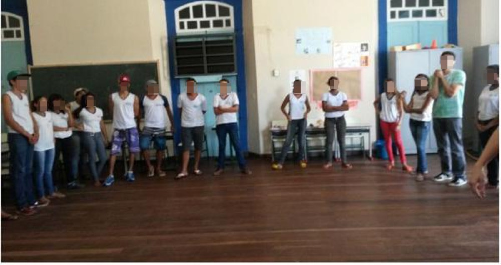
Imagem 1: Aplicação da oficina no Lyceu de Goyaz. Foto: Lucas Andrade e Samantha Castro
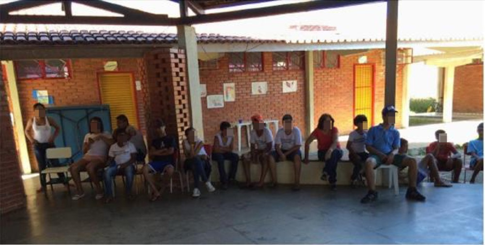
Imagem 2: Aplicação da oficina no Colégio Estadual Albion de Castro Curado. Foto: Lucas Andrade e Samantha Castro
Visando trabalhar o conceito de patrimônio, foram distribuídos dois pedaços de papéis coloridos para cada educando, de modo que em um deles deveriam registrar o nome de objetos, saberes, experiências ou competências que gostariam de guardar consigo. O outro papel, em contrapartida, foi utilizado para registrar as coisas que deveriam ser jogadas no lixo. A partir daí, e diante da explanação de cada um sobre as coisas valorosas e as descartáveis, foi construído um mural com os patrimônios dos educandos, ao passo que aquilo que eles consideraram como lixo foi descartado. Ao final da dinâmica foi possível discutir sobre o conceito de patrimônio, bem como da classificação em material e imaterial. Acerca dessa parte da oficina, seguem as imagens dos murais produzidos:
Imagem 3: Mural com os patrimônios dos alunos do Lyceu de Goyaz. Foto: Lucas Andrade e Samantha Castro
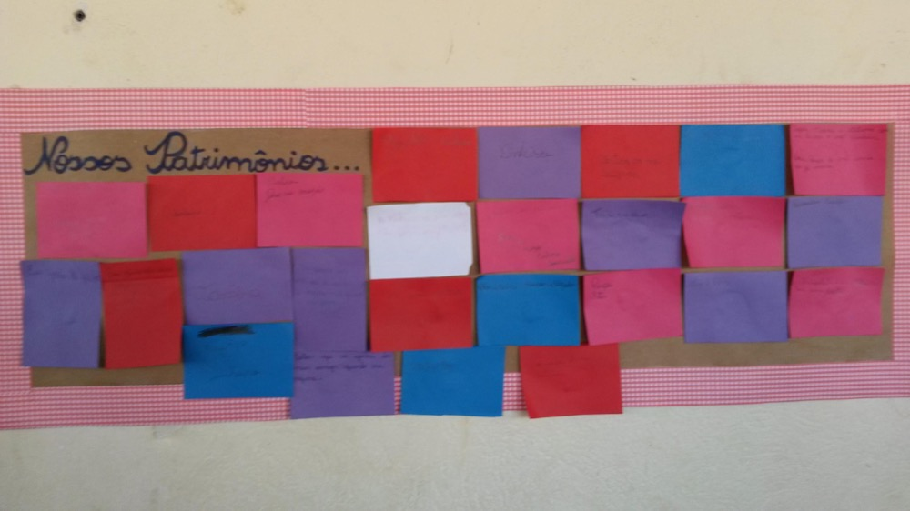
Imagem 4: Mural com os patrimônios dos alunos do Colégio Estadual Albion de Castro Curado. Foto: Lucas Andrade e Samantha Castro
Nos referidos murais constatou-se que os alunos, na maioria das vezes, guardavam para si objetos de valor econômico, tais como dinheiro, videogames, celulares, computadores, dada a importância que os mesmos apresentam no cotidiano de cada um ou, ainda, objetos que apresentavam valores sentimentais, como a roupa do batismo, a corrente que ganhou na infância, o tênis do irmão falecido, cartas, fotografias, objetos religiosos. Em contrapartida, consideravam como lixo objetos, roupas, calçados e equipamentos eletrônicos que julgavam obsoletos para o uso nas suas realidades.
61
Era esperado que os alunos compreendessem que o patrimônio cultural deve apresentar relevância para a coletividade e que, por isso, deve ser preservado. O patrimônio tombado e o não tombado também foram abordados ao final desta dinâmica. A compreensão de patrimônio trabalhada, portanto, apresentou coerência com o processo histórico de sua concepção ao contemplar uma visão crítica acerca do mesmo, conforme observado:
É preciso, no campo da História, que se supere aquela fase de afirmação de que “tudo que é antigo é bonito, porque a professora disse”. O importante é que a criança, o adolescente ou o adulto sejam capazes de apreciar a casa em que vivem e o mundo que os rodeia, sabendo apreciar igualmente os valores e características das épocas que os procederam, sem desvalorizações ou supervalorizações. Herdeiros de um vasto patrimônio somos jogados no mundo da cultura sem saber que a sociedade tem raízes e que a sociedade em que vivemos é produto de uma longa evolução (HORTA, 2003, p. 20).
Num segundo momento aconteceu, em uma roda de conversa, discussão acerca da acessibilidade destes vários patrimônios, na qual os alunos deveriam perceber a representação das relações de poder presente nos mesmos, bem como a importância do patrimônio presente no centro e nos demais setores da Cidade de Goiás. Para tanto, alguns exemplos das realidades dos alunos foram explanados, de acordo com as informações colhidas no diagnóstico. Assim, eles seriam capazes de perceber que todos esses patrimônios possuem a sua importância e igualmente devem ser acessados.
Ainda nessa parte da intervenção, objetivando trabalhar-se a acessibilidade cultural na Cidade de Goiás, em um momento de exposição por parte dos oficineiros, algumas histórias dos patrimônios localizados no Distrito de Davidópolis foram levadas para os alunos do Lyceu de Goyaz, bem como alguns patrimônios existentes no Centro Histórico foram explicados para os alunos do Colégio Estadual Dr. Albion de Castro Curado. Por se tratar de alunos que estão distantes dos patrimônios, no momento da explanação foi esclarecido para eles a importância de conhecer e valorizar não só o que está tombado pelo poder público ou do lado da casa de cada um deles, diante da visão orgânica de cidade, pela qual, culturalmente, todos os bairros e setores devem se relacionar.
Num terceiro momento da oficina, ainda em roda, buscou-se a apreensão destes patrimônios, de modo que foram distribuídas algumas imagens relacionadas a patrimônios materiais e imateriais para os alunos que, em grupo, deveriam decidir quais eram patrimônios e quais não eram. Acontece que todas as imagens distribuídas remontam a um patrimônio, sendo que nem sempre esteera tombado, o que podia fazer com que o aluno o desconsiderasse enquanto patrimônio. Esta desconsideração dos elementos enquanto patrimônios aconteceu, sobretudo, com as imagens que remontavam a um patrimônio imaterial. Estas particularidades foram explicadas em um momento posterior, inclusive, numa tentativa final de eliminação de preconceitos e estereótipos, tão comuns na realidade do público envolvido.
Como produto desta dinâmica, resultou-se um painel com as imagens dos patrimônios, de modo que, no momento para a correção da atividade, os oficineiros explicaram aos alunos que todas as imagens remontavam a um patrimônio material ou imaterial, mas que todos representavam a identidade de determinado povo e, igualmente, deveriam ser respeitados. A seguir, as fotos do produto desta dinâmica:
62
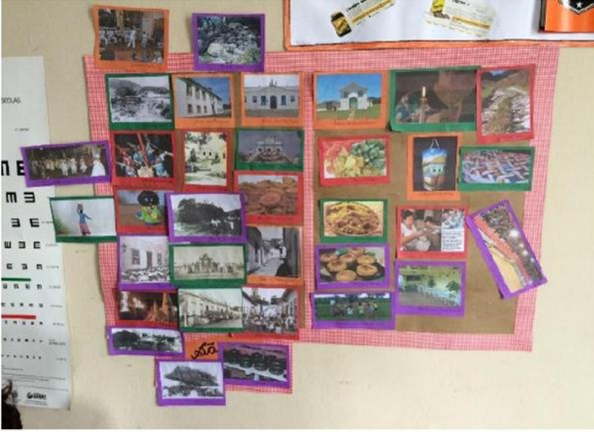
Imagem 5: Painel com imagem dos patrimônios do Lyceu de Goyaz. Foto: Lucas Andrade e Samantha Castro
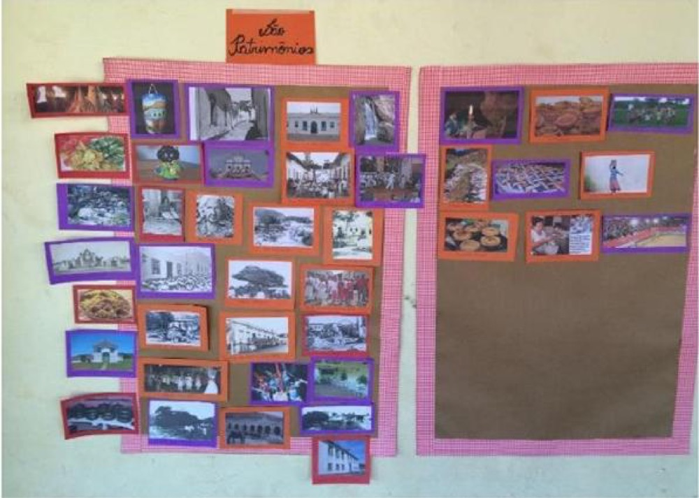
Imagem 6: Painel com as imagens dos patrimônios do Colégio Estadual Albion de Castro Curado. Foto: Lucas Andrade e Samantha Castro
Nesta última ação, buscou-se, portanto, a junção de todos os conceitos trabalhados ao longo da intervenção, uma vez que o patrimônio tombado presente no centro histórico é colocado em contraponto com os patrimônios presentes nos outros setores da cidade e que, ao final da oficina, os educandos poderiam compreender que estes possuem o mesmo valor e que necessitam do mesmo cuidado e atenção. É, portanto, por meio da oficina de educação patrimonial que todos os conceitos abordados na intervenção puderam ser apreendidos. Isso porque o patrimônio cultural, em sua conceituação mais ampla, está em evidência e pode ser discutido pelos sujeitos. Acredita-se que foi o momento de instigar-se para pensar e refletir o patrimônio, reconhecendo-se o valor do mesmo, sobretudo, em última análise, para a afirmação das identidades dos sujeitos. Sobre todo este processo, tem-se que:
Definimos educação patrimonial como um processo permanente e sistemático de formação, que coloca o patrimônio cultural como fonte primária de conhecimento individual e coletivo. É o ensino centrado nos bens culturais (evidências e manifestações de cultura), que propõe desenvolver com crianças e adultos, através da experiência e do contato direito, um processo ativo de conhecimento, apropriação e valorização de suas heranças.
Este processo tem por objetivo capacitar os cidadãos para o usufruto de sua herança cultural e propiciar sua participação na criação da cultura, que é um fazer cotidiano da sociedade. O conhecimento crítico e a apropriação consciente, por parte das comunidades, são a garantia de preservação deste patrimônio e reforçam, ao mesmo tempo, os sentimentos de identidade e cidadania. Faz-se necessário um parêntese para definir o que consideramos patrimônio cultural.
Entendemos o patrimônio cultural não somente como um conjunto selecionado de objetos históricos, monumentos representativos de memória nacional, centros históricos, etc., mas também os saberes populares, os artesanatos, as crenças e tradições, os rituais e festas religiosas, os processos de trabalho e produção, as relações sociais, familiares e com o meio ambiente, as formas de organização econômica, política e tecnológica e, ainda, todos os aspectos que a cultura viva da população pode assumir e criar (GRUNBERG, 2008, p. 37-38).
Assim sendo, não há que se negar a importância da oficina de educação patrimonial executada diante do caráter problematizador que apresentou. É possível, portanto, tecer algumas considerações acerca dos resultados atingidos por esta intervenção.
2.5 RESULTADOS
Primeiramente, foi necessário fazer uma análise acerca do conteúdo diagnosticado nos questionários propostos. Naquela ocasião, os alunos mostraram desconhecer os conceitos relacionados à cultura e, muitas vezes, associando o termo à educação, sabedoria e inteligência. Foi recorrente também a afirmação, nos questionários, de que existem culturas mais importantes que outras. Essas declarações foram constatadas e trabalhadas já no momento de apresentação dos participantes da oficina, conforme relatado. Isso porque alguns alunos se identificavam com estilos musicais totalmente distintos dos outros, chegando, inclusive, a afirmar que certo estilo era melhor que os demais. Considera-se que, nesta oportunidade, eliminou-se alguns tipos de estereótipos.
63
Constatou-se, na aplicação da dinâmica da construção do conceito de patrimônio, que os elementos que os alunos consideraram importantes, na maioria das vezes, estavam voltados à infância e às vivências de cada um. Os papéis que foram guardados pelos alunos se relacionavam com a memória dos indivíduos. Essa constatação facilitou trabalhar o conceito de patrimônio, relacionando-o com a preservação da memória e identidade coletivas.
Nos questionários ficou bastante claro que os alunos desconhecem as manifestações culturais atreladas à sua realidade. Ao trabalhar o conceito de acessibilidade cultural, incentivou-se, portanto, que os alunos valorizem as práticas culturais locais e sintam-se à vontade para conhecer a cultura presente nos demais setores da cidade. Afirmou-se a importância do acesso aos bens patrimoniais do Centro Histórico, não deixando de destacar a relevância das manifestações que acontecem em todos os setores da cidade. Notou-se que neste momento os alunos participaram e contribuíram trazendo exemplos de manifestações que não apareceram no diagnóstico.
Nas duas escolas, ao realizar o trabalho de colagem e distinção entre o que era e o que não era patrimônio, os alunos classificaram a maioria das imagens como patrimônio. Acredita-se que, como esta foi a última atividade da intervenção, eles compreenderam a abrangência do conceito de patrimônio, inclusive que este vai além do tombamento.
Após a aplicação da intervenção, observou-se nos estudantes envolvidos maior compreensão acerca da temática trabalhada (acessibilidade cultural, patrimônio, identidade). Alguns dos educandos se posicionaram de maneira espontânea e muito consciente em relação às contradições que envolvem o patrimônio cultural, numa busca por emancipação.
Os estudantes se mostraram bastante interessados na temática, sobretudo quando voltada para a realidade de cada um deles. Avalia-se, portanto, que a tentativa de contextualização do conteúdo abordado com as vivências dos participantes da oficina foi bastante produtiva.
Há que se reconhecer que a oficina funcionou apenas como um incentivo para o processo de reflexão e criticidade, necessitando que os indivíduos se dediquem a este processo no futuro. Em todo caso, acredita-se que depois da execução da intervenção os educandos eliminaram alguns preconceitos e estereótipos. No Lyceu de Goyaz, por exemplo, foi necessária a interferência em uma discussão, já que, analisando a imagens relacionados à cultura afro-brasileira, os alunos começaram a referir às mesmas de modo pejorativo. A ocasião foi propícia para a explanação, a todos os alunos, da importância de respeitar-se a cultura do outro.
Foram deixados painéis com o registro iconográfico realizado ao longo da oficina, possibilitando a permanência da temática trabalhada no ambiente escolar e incentivando o aprofundamento e possíveis reflexões acerca da mesma.
Por fim, é importante ressaltar que, analisando o envolvimento dos alunos ao longo da oficina de educação patrimonial e, se comparado o resultado da intervenção com as respostas oferecidas no diagnóstico, houve um desenvolvimento significativo destes educandos, haja vista que já são capazes de se posicionar em relação à cultura e compreendem-se como um indivíduo dentro de um sistema de cultura. Em última análise, os alunos reconheceram a importância da cultura, da diversidade cultural e do acesso a elas, propondo-se minimizar e eliminar o distanciamento em relação ao patrimônio.
64
3. CONCLUSÃO
O acesso à cultura está garantido constitucionalmente. No entanto, somente a previsão legal não é o bastante para fazer com que os bens culturais sejam de fato acessados por parte significativa da população. Ao pensar a Cidade de Goiás e sua proximidade com o patrimônio cultural, ações que viabilizem evidenciar este patrimônio devem ser consolidadas.
Neste sentido que a intervenção se perfez. Todavia, há que se reconhecer que ela é apenas uma ação para a efetividade do acesso à cultura. Faltam políticas públicas e o próprio envolvimento do Estado de modo a assegurar que os indivíduos, de fato, acessem a cultura de forma plena. A falta de acesso deve ser encarada como falta de políticas que contemplem esta problemática e, jamais, recair sobre o argumento cômodo de falta de interesse dos indivíduos acerca do patrimônio cultural. Se os indivíduos não têm interesse pode ser porque nem chegaram a ter conhecimento da existência deste patrimônio e, por isso, a questão merece atenção por parte das entidades governamentais.
No decorrer das oficinas foi constatado pouco ou nenhum conhecimento por parte dos alunos acerca do patrimônio tombado da Cidade de Goiás. A situação se agravou mais quando os participantes foram questionados sobre as manifestações culturais locais. Este contexto deve ser alterado, na medida em que os educandos devem se identificar enquanto sujeitos culturais e, sobretudo, reconhecer as práticas culturais que permeiam o seu cotidiano com a devida importância.
Segundo Laraia (2001), é necessário ter um conhecimento mínimo acerca do sistema cultural em que se está inserido para operar dentro do mesmo. A intervenção, portanto, possibilitou que o mínimo desse conhecimento fosse ofertado para os alunos nele envolvidos, até mesmo porque a partir da consciência do indivíduo da realidade que o permeia é que ele pode propor mudanças e melhorias, já que a contemporaneidade está em constante processo de transformação.
Dada a importância da compreensão, por parte dos indivíduos, de sua própria realidade, nota-se a necessidade destas ações que visem posicionar os sujeitos em uma condição crítica acerca de sua condição. Rifiotis (2007), ao analisar a concepção de sujeitos de direitos, enfatiza a importância do sujeito social se manifestar diante das contradições vividas, almejando a garantia e a ampliação do rol de direitos estabelecidos pelo Estado. É, portanto, romper com a visão paternalista e tutora que o Estado possa ter assumido, colocando o sujeito como o centro das políticas públicas e protagonista neste processo de garantia de direitos.
O patrimônio, por sua vez, apresenta íntima ligação com as relações de poder. Seja por representar a história de determinado povo, seja por representar os anseios e as vivências atuais do mesmo. Portanto, deve ser estudado, discutido, debatido e criticado. Patrimônio e educação devem estar sempre associados, de modo a garantir aos indivíduos a emancipação enquanto sujeitos de direitos.
Note-se, neste contexto, que não só o patrimônio tombado deve ser valorizado, uma vez que cultura deve abarcar todas as manifestações que interfiram no modo de viver e de pensar de determinado povo. Logo, as manifestações culturais que acontecem fora do centro histórico da Cidade de Goiás devem ser reconhecidas como tal, valorizadas e divulgadas para o restante da população. Trata-se de um processo de reconhecimento e valorização das várias identidades que convivem entre si, dada a heterogeneidade da formação das cidades.
65
Sendo assim, há que se concluir que estes conceitos, dada a importância para a formação e emancipação dos indivíduos enquanto sujeitos de direitos, devem ser amplamente difundidos e trabalhados, inclusive por meio de ações institucionais do poder público, consolidando a ponte entre cultura e educação no combate às relações de opressão, discriminação e preconceito, e tendo como norte a construção de uma sociedade livre, justa e igualitária.
REFERÊNCIAS
BRANDÃO, Carlos Rodrigues. O que é educação. São Paulo: Editora Brasiliense, 1981.
BRASIL. Constituição da República Federativa. 1988.
FRANCO, Maria Amélia Santoro. Pedagogia da pesquisa-ação. Educação e Pesquisa, São Paulo, v. 31, n. 3, p. 483-502, set./dez. 2005.
FREIRE, Paulo. Pedagogia da autonomia: saberes necessários à prática educativa. São Paulo: Paz e Terra, 1996.
GRUNBERG, Evelina. Educação patrimonial: trajetórias. In. BARRETO, Euder Arrais et al. (Org.) Patrimônio cultural e educação: artigos e resultados. Goiânia: UFG, 2008.
HORTA, Maria de Lourdes Pereira. Educação patrimonial. In. BARRETO, Euder Arrais. Patrimônio cultural e educação: artigos e resultados. Goiânia: UFG, 2008.
LARAIA, Roque de Barros. Cultura: um conceito antropológico. 14. ed. Rio de Janeiro: Jorge Zahar Editor, 2001.
RIFIOTIS, Theophilos. Direitos humanos: sujeito de direitos e direitos do sujeito. In: Educação em direitos humanos: fundamentos teórico-metodológicos. 2007. Disponível em: <http://www.dhnet.org.br/dados/livros/edh/br/fundamentos/ 15_cap_2_ artigo_ 07.pdf>. Acesso em: 3 jun. 2014.
TRIPP, David. Pesquisa-ação: uma introdução metodológica. Tradução de Lólio Lourenço de Oliveira.Educação e Pesquisa, São Paulo, v. 31, n. 3, p. 443-466, set./dez. 2005.
Acessibilidade Cultural na Cidade Goiás: Construindo Patrimônio das/para Humanidades
Aluna: Samantha Andrielle Moreira de Castro
Polo: Cidade de Goiás
Orientadora Acadêmica: Shirlene Álvares da Silva
Coordenadora de orientação: Simone Rosa da Silva
Anexos
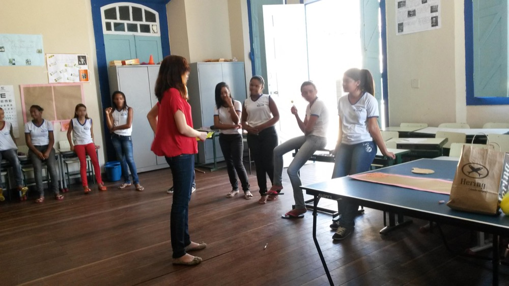
Imagem 1: Oficina no Colégio Lyceu de Goyáz
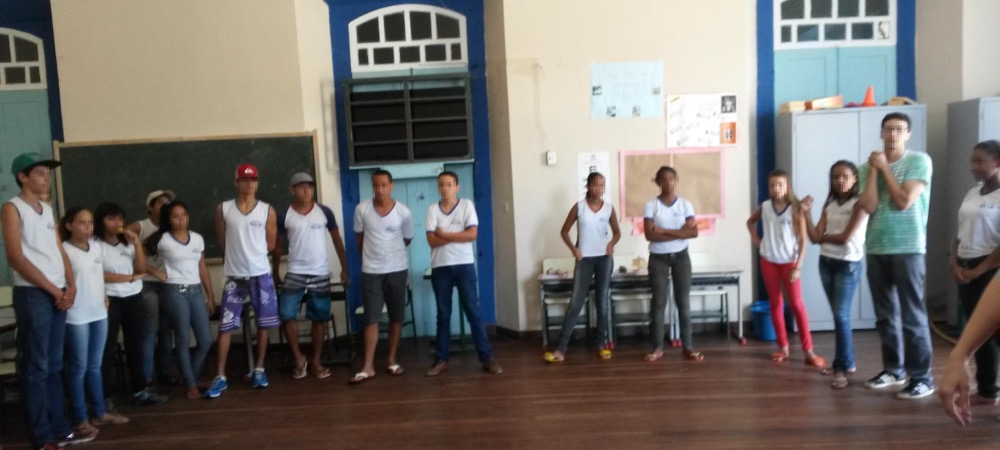
Imagem 2: Oficina no Colégio Lyceu de Goyáz
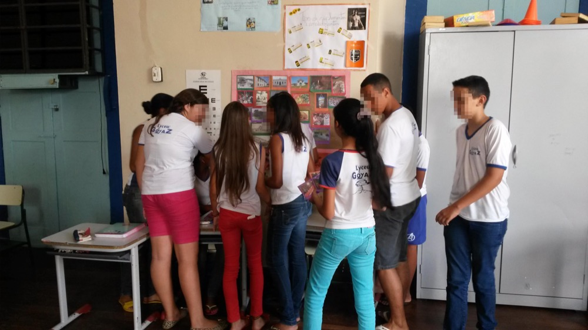
Imagem 3: Oficina no Colégio Lyceu de Goyáz
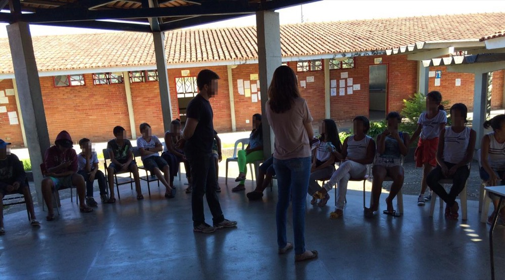
Imagem 4: Oficina no Colégio Dr. Albion de Castro Curado
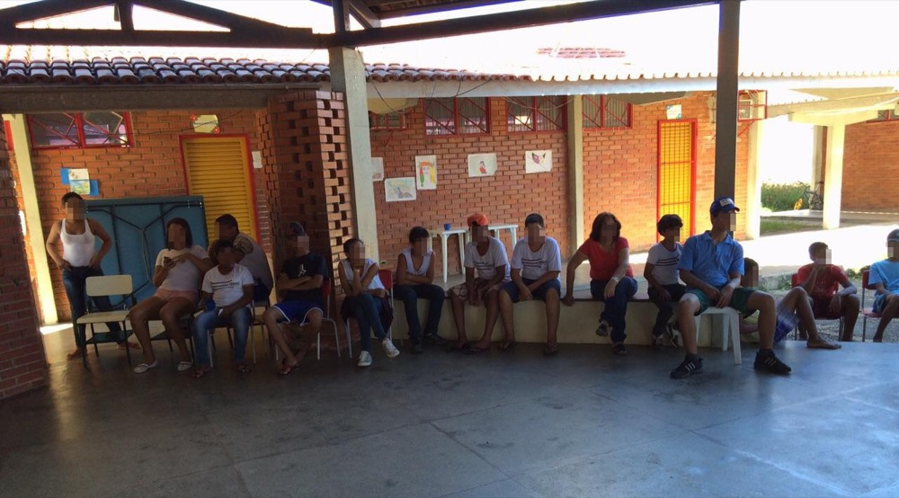
Imagem 5: Oficina no Colégio Dr. Albion de Castro Curado
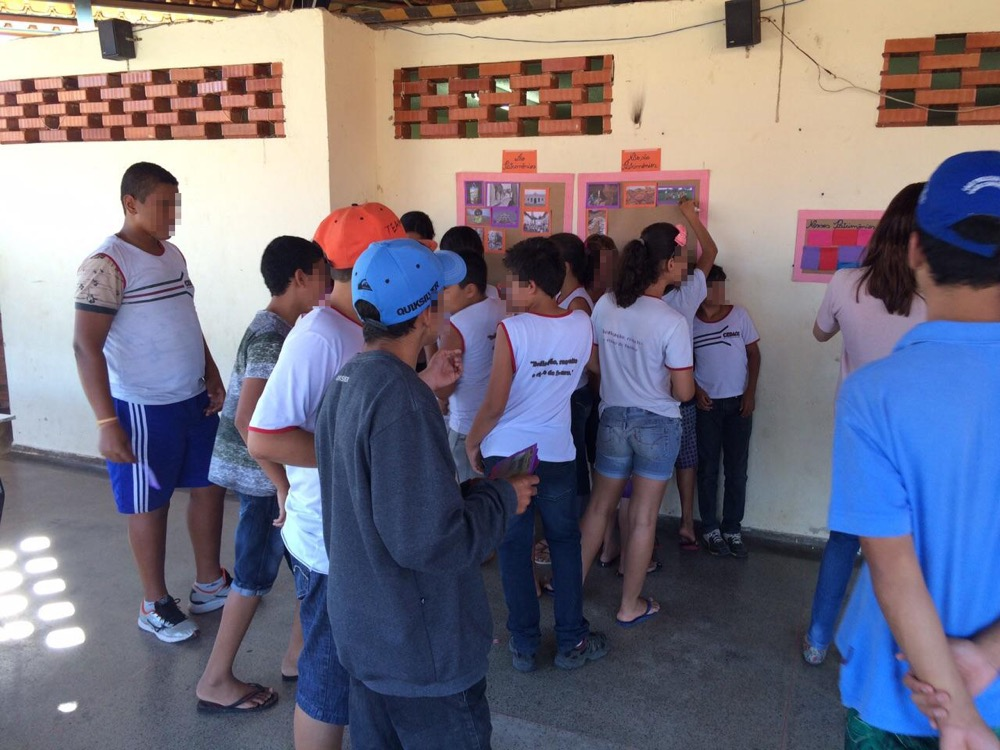
Imagem 6: Oficina no Colégio Dr. Albion de Castro Curado
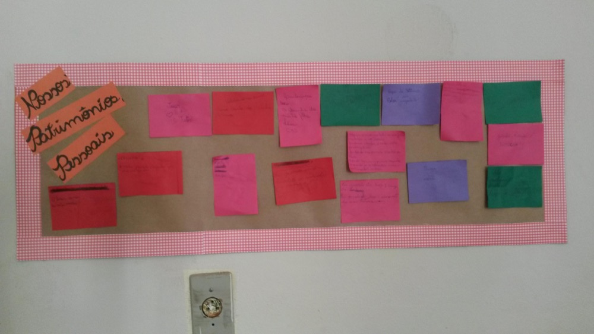
Imagem 7: Painéis identitários e patrimoniais produzidos pelos alunosImagem 8: Painéis identitários e patrimoniais produzidos pelos alunos
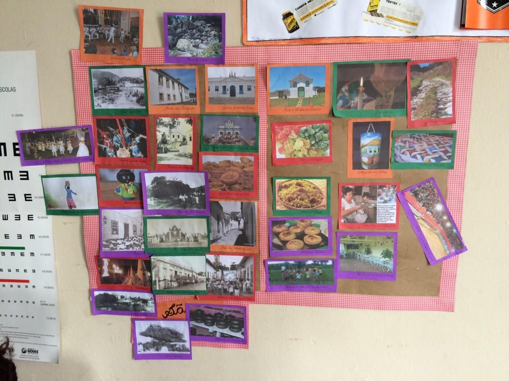
Imagem 9: Painéis identitários e patrimoniais produzidos pelos alunos
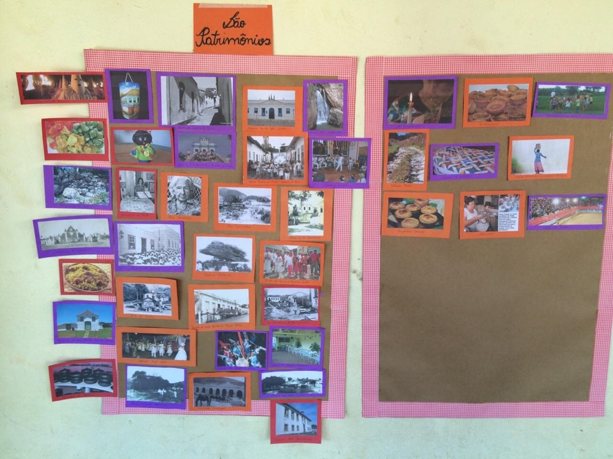
Imagem 10: Painéis identitários e patrimoniais produzidos pelos alunos
1. INTRODUÇÃO
A Cidade de Goiás, Patrimônio Histórico da Humanidade há mais de dez anos, reconhecido pela Unesco graças aos resquícios mantidos de sua história de quase trezentos anos, os quais representam a herança colonial brasileira em seus aspectos físico e cultural, é palco de disparidades sociopolíticas em que uma elite que permeia os idos do coronelismo ainda define quem tem ou não acesso à cultura local (bem como a outros bens públicos). A demarcação do espaço tombado pelo Patrimônio veio a aglutinar tal problemática, haja vista que as propriedades que ali se encontravam já eram parte das posses dessa elite, que então passou a limitar, simbolicamente, o uso desses espaços (tencionando certa “higienização social” ), segregando a população, e causando naqueles que habitam demais setores aquém do centro o sentimento de não pertencimento, negando a estes a identidade de vilaboenses, bem como o direito de fazer parte de todas as ações culturais que passou-se a promover nesta cidade que vem se tornando turística.
Refere-se ao processo de seleção social, econômica e cultural que fora prática comum em quase todo país no início do século XX, na intenção de “limpar” os centros urbanos de pessoas que a elite econômica e política local consideravam inadequadas de convívio. Nestas ações, os chamados médicos sanitaristas diagnosticavam alguns indivíduos como desajustados da ótica social vigente e os encaminhavam a instituições como asilos.
66
Assim, optou-se, nessa conjuntura, pelo trabalho com a seguinte temática: Acessibilidade cultural na Cidade Goiás: construindo patrimônio das/para humanidade, tendo por público-alvo estudantes do ensino fundamental, de duas instituições de ensino públicas cujas realidades são contrastadas pelos locais que ocupam em relação ao Centro Histórico, a parte tombada pelo Patrimônio Histórico da Humanidade. A intervenção fora planejada enquanto oficinas que contassem com problematizações, partindo das compreensões prévias dos estudantes sobre temas como patrimônio, relação entre história e os tombamentos locais, identidade cultural, cultura, etc., para apresentar-lhes as noções científicas destas a fim de torná-los aptos a compreenderem a dinâmica espacial, social e política da cidade. Compreendemos que somente tornando essa organização inteligível pode-se empoderar a população local para que se reconheça como parte da história e de possíveis transformações, e que atuem em prol das mesmas.
A base do projeto foi a ideia de acessibilidade cultural, ou seja, sendo a cidade um espaço público de vivências cotidianas é direito de sua população usufruir dos serviços e circular nos espaços públicos. Por isso, pensamos em uma intervenção que trabalhasse as mesmas temáticas e didáticas similares em duas realidades diferentes: no Lyceu de Goyaz, localizado no Centro Histórico, trazendo a importância de outros patrimônios não tombados mas que representam a sociedade vilaboense, como a história do Distrito de Davidópolis (localizado na GO-070, cerca de 5 km da Cidade de Goiás), antigo Bacalhau da Barreira (Barreira Fiscal e Sanitária ainda do período colonial); no Colégio Estadual Dr. Albion de Castro Curado, partindo da história local, do mesmo Distrito, para compreendermos a importância do Centro Histórico enquanto Patrimônio da Humanidade e já primando pelo direito destes em usufruir daqueles espaços e participar das atividades que ali ocorrem.
Portanto, a seguir, as ações que levaram ao planejamento da intervenção, as parcerias com as instituições, a efetivação das oficinas, bem como as conclusões deste processo são descritas e analisadas.
2. DESENVOLVIMENTO
2.1 OBJETIVOS
2.1.1 Objetivo Geral
Trabalhar a educação patrimonial, ressaltando a importância desta ser contínua e que priorize emancipação e empoderamento a partir da compreensão de usos e ocupações de espaços públicos na Cidade de Goiás.
2.1.2 Objetivos Específicos
Ampliar a conceituação de cultura e patrimônio;
Conscientizar a população da importância da valorização das várias manifestações culturais;
Colaborar para o processo de emancipação e criticidade do sujeito;
Compreender a cidade como ambiente orgânico e as complexidades que dela decorrem a partir da organização e das vivências deste espaço.
2.2 METODOLOGIA
Tendo como norte a metodologia da pesquisa-ação emancipatória, adaptada a um projeto intervencionista, "que tem como meta explícita mudar o status quo não só para si mesmo e para seus companheiros mais próximos, mas de mudá-lo numa escala mais ampla, do grupo social como um todo" (TRIPP, 2005, p. 458), buscamos, a partir da intervenção na comunidade a emancipação, empoderamento e criticidade dos sujeitos. Assim sendo, a metodologia da pesquisa-ação emancipatória é almejada no desenvolvimento do projeto. Partindo do pressuposto que a referida metodologia é consequência da pesquisa-ação política cultural, o que se busca é a compreensão do indivíduo enquanto sujeito de direitos, principalmente no que diz respeito aos direitos culturais e sua eficácia e aplicabilidade.
67
Neste contexto, propusemos a realização de oficinas de caráter conscientizador e instigador, das quais os envolvidos possuíssem condições de posicionarem-se em relação ao tema do projeto. O que se buscou, ao final, foi que cada um dos indivíduos se tornasse apto a se posicionar criticamente acerca das questões envoltas do patrimônio e que não se limitasse a reproduzir conceitos e ideias carregados de senso comum.
Levando-se em consideração a pesquisa-ação emancipatória, acreditamos que a oficina proposta foi adequada à realidade em que os alunos estão inseridos, facilitando a assimilação do conteúdo e aproximando os educandos da temática sugerida. Para tanto, a aplicação da oficina obedeceu uma etapa prévia de observação da realidade dos indivíduos e coleta de informações que possibilitou essa aproximação com a realidade, que fora a base da intervenção pretendida. Logo, foram aplicados questionários para o público-alvo, num afã de captar elementos do cotidiano destes sujeitos.
Por conseguinte, a fim de se fundamentar as observações fornecidas a partir dos dados dos questionários, bem como da realidade organizacional evidente da Cidade de Goiás, espaço-tema e espaço-palco da intervenção, havíamos procurado trabalhar a educação patrimonial e os direitos culturais através de estudos qualitativos, bibliográficos, documentais e iconográficos, bem como comparativos.
Utilizamos didaticamente uma pedagogia problematizadora, em que os cursistas estiveram diante de problemas reais vivenciados em seu cotidiano, na busca da solução dos mesmos, levando-se em consideração os elementos propostos e disponíveis para tanto. Deste modo, tendo como base a realidade dos indivíduos e levando-se em conta a criticidade dos sujeitos, almejamos o alcance de uma solução, mesmo que abstrata, dos problemas outrora apresentados. Foi, portanto, o momento em que os cursistas tomaram consciência dos problemas existentes em sua realidade, desenvolvendo condições de combatê-los. A proposta, portanto, transcendeu a objetivos meramente técnicos ou práticos, possuindo caráter político e objetivando a emancipação dos sujeitos (educandos e educadores) envolvidos.
2.3 PROCEDIMENTOS
Durante a elaboração do projeto de intervenção que originou a atividade da qual se trata o respectivo relatório, pensamos nas prioridades, relativas à temática patrimônio, na realidade local, ou seja, da Cidade de Goiás. Visivelmente, com mais de uma década que este tema é constantemente pronunciado no município – embora suas discussões e o recorrente tombamento tenha passado por processos diversos que se desenvolveram por toda segunda metade do século XX – este ainda não se tornou inteligível, compreensível para a população.
Entendendo a ideia de patrimônio aos saberes, valores, memórias que representam toda uma trajetória social, histórica, Grunberg (2008) destaca educação patrimonial como:
... um processo permanente e sistemático de formação educacional, que coloca o patrimônio cultural como fonte primária de conhecimento individual e coletivo. É o ensino centrado nos bens culturais (evidências e manifestações de cultura), que propõe desenvolver com crianças e adultos, através da experiência e do contato direto, um processo ativo de conhecimento apropriação e valorização de suas heranças (GRUNBERG, 2008, p. 37).
A educação patrimonial, ou educação no/para patrimônios (como preferem alguns teóricos), é extremamente necessária no cotidiano desta cidade, dado que, como os processos de tombamento não passaram pelo conhecimento, instrução e informação da população em geral, esta tem todas as ações governamentais efetivadas na cidade como invasões: têm-se pessoas aquém desta sociedade, intervindo e decidindo o que nela ocorre ou como se estrutura.
68
O olhar da Educação Patrimonial e a abordagem de Jeudy são fundamentais para a escola, porque tocam em pontos importantes a serem pensados. Se o patrimônio está nas relações dos sujeitos com as produções culturais, o patrimônio pode estar em qualquer lugar e em qualquer coisa, desde de que se ligue ao coletivo. [...] Desta forma, trabalhar o patrimônio na escola não significa trazer uma abordagem neutra, significa trazer o bem cultural selecionado, por esse motivo a concepção do professor com relação ao mesmo é fundamental. Estas reflexões para a escola e professores podem evocar tanto o reconhecimento de um bem cultural consagrado, como a pesquisa sobre outros bens culturais nos grupos sociais... (VIANA, 2009, p. 52).
Tendo visto que essas ações se voltem para obras arquitetônicas, ou de manifestações artístico culturais, dentre outras, e que as mesmas não atingem igualmente a todos os moradores, e compreendendo que isso gera certa estratificação social, marginalização, processos de exclusão, a intenção do projeto de intervenção foi atuar, ainda que nesse curto intervalo de tempo, para que o público-alvo se compreendesse como parte dessa cidade patrimônio, bem como entendesse aq cultura que se produz, suas representações sociais são igualmente importantes e também configuram a identidade coletiva local. Logo, entendemos por Direitos Culturais dos quais emana a acessibilidade cultural:
Direitos Culturais são aqueles afetos às artes, à memória coletiva e ao repasse de saberes, que asseguram a seus titulares o conhecimento e uso do passado, interferência ativa no presente e possibilidade de previsão e decisão de opções referentes ao futuro, visando sempre à dignidade da pessoa humana (CUNHA FILHO, 2000, p. 34).
Na escolha do público-alvo procuramos pensar em transformações (relativas a empoderamento, a consciência de si enquanto parte desses jogos políticos e sociais, identitárias) a curto, médio e longo prazo. Logo, optamos por estudantes da rede pública de ensino considerando que quaisquer modificações de visão destes poderia mudar a forma como veem a si, a seu grupo social enquanto partes da cidade, e, a longo prazo, se tornarem adultos autônomos e empoderados cultural e politicamente, participando de forma ativa nas decisões que outrora lhes foram negadas.
Para tanto, a fim de se trabalhar essa educação para patrimônios em duas realidades diversas, ou seja, de quem está inserido ao menos espacialmente na parte tombada da cidade e aqueles que se encontram em regiões afastadas, o projeto optou por atuar com o Colégio Estadual Lyceu de Goyaz e o Colégio Estadual Doutor Albion de Castro Curado: o primeiro situado no chamado “Centro Histórico”, e o segundo em um dos distritos da cidade.
ETAPA 1: visita às escolas campo
Tendo escolhido as instituições de ensino para a intervenção, tínhamos que ver a disponibilidade das mesmas em nos receber e auxiliar nas atividades. Realizamos duas visitas, uma em cada instituição, e fomos recebidos com apreço, atenção e otimismo pelos respectivos Coordenadores Pedagógicos, que, aliás, nos assistiram em todas as etapas, auxiliando quando requisitados.
O Lyceu de Goyaz (cujo prédio é de datação do período colonial) localiza-se na Rua Maximiano Mendes, 15 - Centro, Goiás Velho - GO, 76600-000. Portanto, seus alunos cotidianamente perpassam as ruas principais do Centro Histórico, notando todas as intervenções do Instituto do Patrimônio Histórico e Artístico Nacional (IPHAN) e outros órgãos, bem como ao menos notam as organizações dos principais eventos culturais da cidade, que circundam o espaço do prédio. Essa presença é tão sentida que o prédio é anualmente emprestado à organização do FICA, Festival Internacional de Cinema e Vídeo Ambiental (sem dúvida, evento que mais atrai público à cidade que tenta se firmar econômica e tradicionalmente enquanto turística).
69
Num contexto totalmente adverso, o Colégio Albion se localiza no Distrito de Davidópolis, Avenida Goiás, s/nº, Davidópolis, Goiás-GO – CEP: 76.600-000. Embora este local seja de extrema importância para o povoamento da Cidade de Goiás, dado que neste fora construída a Barreira Fiscal e Sanitária daquele período, e ainda que concentre alguns resquícios arquitetônicos e tradicionais coloniais, sua realidade é de certo abandono do poder público. Está distante espacial e economicamente do Centro Histórico de Goiás. Poucas ruas calçadas, esgotos a céu aberto, ruas sem iluminação, enfim: certamente seus moradores, alunos desta instituição, vivem inúmeras dificuldades que compõem suas memórias sociais coletivas, bem como suas identidades.
ETAPA 2: aplicação dos questionários
Elaboramos um questionário com 15 questões (ANEXO A), algumas objetivas, outras subjetivas, pelas quais pudéssemos mapear as principais características sociais desses indivíduos, bem como suas noções sobre cultura, patrimônio, identidade e como se notam na cidade e compreendem seu valor histórico. Este foi dividido em quatro tópicos: no primeiro, informações pessoais, como série, idade e bairro em que mora; no segundo, as relações do indivíduo com o patrimônio tombado da Cidade de Goiás; o terceiro, o reconhecimento de patrimônios materiais e imateriais não tombados, nos bairros em que mora e, no quarto, os conhecimentos sobre temáticas afins, como Identidade, Cultura.
No Lyceu de Goyaz nos dividimos e cada interventor aplicou em uma das salas, dos sétimo e oitavo anos do Ensino Médio. No Albion, um dos interventores aplicou os questionários nas duas salas em que a coordenadora pedagógica da instituição alocou os estudantes. Nesta, contou-se com o auxílio do monitor, dado que é uma escola de tempo integral, logo, até as didáticas tiveram que ser readaptadas, dado que se atuavam ali com alunos do sexto ao nono ano.
A quantidade de estudantes foi relativamente a mesma para cada instituição: cerca de 50 por escola,ambos nos turnos vespertinos. A dificuldade no Lyceu era que seus alunos, a maioria, advinha da zona rural, logo, possuíam poucos conhecimentos e vivências até mesmo do Centro Histórico. Como visto, a dificuldade maior no Albion fora conciliar método e didáticas de pessoas em fases etárias e níveis escolares tão díspares.
ETAPA 3: análise dos questionários e elaboração da oficina
Assim, notamos algumas dificuldades em discernir patrimônios, em conceituar minimamente cultura, bem como em compreender-se valorativamente enquanto parte desta, da história social do grupo. Nos questionários, observamos ainda que sumária maioria possui uma visão elitista de cultura, história e patrimônio, considerando estes apenas o que a cultura erudita produz; que, talvez por isso, não se identificam com a cidade em termos de patrimônio e não costumam frequentar o “Centro Histórico” (que compreende o espaço urbano tombado pelo Patrimônio Histórico) por interesses cognitivos, mas apenas por entretenimento.
Sobre as manifestações e eventos culturais de seus bairros, destacaram apenas festas de bares, shows, algumas comemorações realizadas por instituições religiosas. Para as práticas e saberes que consideram importantes para a cultura local, ainda motivados pela visão elitista de cultura, ou mesmo por não compreenderem patrimônios materiais e imateriais aquém do Centro Histórico, poucos conseguiram identificá-los.
70
ETAPA 4: efetivação da intervenção
As intervenções ocorreram em períodos similares: cerca de duas horas, dado que primávamos pela equidade dos assuntos tratados e o Lyceu tinha dificuldades em nos dispor mais aulas, logo, aquém de algumas adaptações, as intervenções foram praticamente as mesmas.
As oficinas foram planejadas somente após a análise dos questionários. Isso porque compreendemos que não tínhamos como exigir conhecimentos dos estudantes que não fizessem parte de suas realidades, das vivências de seus bairros. Logo, os questionários nos possibilitavam saber como e em que intervir, por exemplo: ao desmistificarmos que patrimônio é somente o que fora tombado, no Centro, propúnhamos um patrimônio que os mesmos citaram existir em seus bairros, cuja proximidade os auxiliava a melhor interiorizar as informações.
Como exemplo, citaram eventos como o Festival Internacional de Cinema e Vídeo Ambiental (que ocorre no Centro), a Festa de Santa Rita (no Bairro de João Francisco), as Festas Juninas (que ocorrem em diversos bairros), Festa de Peão (em Davidópolis), entre outras.
Havíamos, pelas respostas deste, planejado a oficina em etapas: na primeira, a apresentação; na segunda, a confecção do painel dos patrimônios pessoais e, por fim, o painel identitário, a partir dos patrimônios locais, tombados ou não. A apresentação consistia numa introdução da ideia de identidade cultural, ao passo que cada estudante deveria apresentar-se contando seu nome, um estilo musical com o qual se identificasse e um local na cidade que melhor o representasse, por exemplo: Ana Clara, funk, Praça do Coreto.
Assim, após as apresentações pudemos trabalhar a pluralidade cultural, a não hierarquização desses valores culturais (que o funk, por exemplo não é inferior culturalmente ao rock ou outro estilo) a partir da compreensão da origem dos estereótipos, bem como a identidade cultural, memória coletiva e suas relações com os espaços de vivência.
Para compreenderem a lógica dos patrimônios, distribuímos dois recortes de papel, um branco e um colorido, para que, respectivamente, escrevessem nestes algo pessoal que costumam jogar fora (sem valor monetário e/ou emotivo) e que guardam por algum motivo afetivo.
O que jogam fora, naturalmente são as produções materiais e imateriais cotidianas que não são atribuídos valores: roupas que não servem mais, materiais escolares usados, revistas velhas, cartas, etc. Nesta ocasião, um aluno citou “fotos com pessoas que não gostaria de lembrar”. Como apresentávamos em voz alta os patrimônios, mas sem identificar os estudantes, podíamos discutir os objetos sem constrangê-los. Desta forma, com o exemplo de se jogar fora algo que não se quer lembrar, problematizamos a retirada da forca na antiga rua da forca (por esse motivo ainda hoje chamada de Rua da Manchorra, que alude a violência física), a qual não seria um atrativo positivo para uma cidade que visava urbanização e valorização turística.
O que guardam, são seus patrimônios: cartas, fotos, cartões, roupas de batizado, roupas com que um ente querido os presenteou, dinheiro, o tênis que foi o primeiro objeto comprado com o próprio trabalho, a bicicleta, a corrente folheada a ouro, etc. Logo, foi possível interpretar os valores que estão por trás dos tombamentos, sejam esses voltados à memória nacional, seja por ter um valor monetário intrínseco, por representar um marco importante, entre outros.
71
Com os objetos que não jogariam fora construímos o primeiro painel, a partir do qual compreenderam o que torna um bem, um saber, importante ao ponto de ser considerado patrimônio pessoal, regional, nacional, mundial. Como visto anteriormente, como desconheciam os patrimônios imateriais, nenhum deste tipo fora citado nesta parte da oficina.
Assim, procuramos, através de problematizações, insinuações, diálogo constante, auxiliá-los a descentralizar os valores culturais do patrimônio tombado, bem como compreendê-lo como tal e a si como parte daquele. Tão logo, também observaram que em seus locais de vivência havia outros patrimônios tão importantes quanto os tombados.
Moradores da zona rural (maioria dos alunos do Lyceu de Goyaz) notaram-se parte de uma memória local quando observaram os diversos saberes e práticas que ainda mantêm, como produção de alimentos, manifestações religiosas, saberes ligados à alvenaria, trabalho com argila, palha, cipó, etc. Moradores dos bairros marginalizados,também conseguiram se perceber como produtores culturais, principalmente a partir dos patrimônios imateriais.
Por fim, distribuímos, em dois grupos, inúmeras imagens que representavam patrimônios diversos, tombados e não tombados, materiais e imateriais, que se encontram na Cidade de Goiás. Dentre eles selecionamos prédios como a Igreja de São Francisco, Chafariz de Cauda, Mercado Municipal, Igreja de Santa Bárbara, o prédio do Lyceu de Goyaz (todos tombados pelo patrimônio), Cachoeira das Andorinhas, Largo da Carioca, Rio Vermelho, Pedra Goiana (patrimônios naturais), muros e estradas de pedra (mão de obra escrava que deveria compor o patrimônio tombado mas está entre as memórias negativas da colonização), empadão goiano, pastelinho de doce de leite, doces cristalizados, artesanatos (como a boneca Maria Grampinho, colchas de retalho que simbolizam os saberes, logo patrimônios imateriais).
Havia ainda imagens de costumes tradicionais da região, como das lavadeiras, carregadeiras d’água, de festas religiosas, como o Congo e a Procissão do Fogaréu, imagens de personalidades como Cora Coralina e Goiandira do Couto, bem como da Capoeira e das benzedeiras.
Fomentamos a ideia de que somente alguns daqueles eram patrimônios e que o grupo que acertasse quais eram ou não, seria premiado. Após todas as discussões entre os estudantes e o término da atividade, contamos que na verdade todos eram e portanto, todos acertaram, sendo todos premiados.
Não houveram grandes diferenças na execução das atividades em ambas instituições. Estas foram somente espaciais (no Lyceu ocorreu em um salão e no Albion no pátio), organizacionais (no Lyceu tivemos ajuda da Coordenadora Pedagógica e de duas estagiárias e no Albion também da Coordenadora e de um monitor), comportamental (no Lyceu os estudantes mantinham-se mais estáveis e demonstravam pouca motivação nas atividades, ao contrário do Albion, cuja euforia fora intensa do começo ao fim).
De modo geral, como pode se observar nas imagens em anexo, fora evidente a ainda dificuldade de compreensão quanto aos patrimônios imateriais e à cultura popular, ou seja, compreende-se que estes estudantes ainda são impulsionados a ver sua cultura como inferior, como incapaz de ser patrimônio para alguém, bem como as dúvidas no que se refere a saberes e práticas que lhes são tão comuns, como a produção do célebre arroz com pequi, por exemplo. Assim, nos paineis, à esquerda estão dispostas as imagens do que consideram patrimônios (maioria são os já tombados) e à direita os que não consideram patrimônios (maioria imateriais ou manifestações populares).
72
Entretanto, fora evidente o que prevíamos: os estudantes de ambas as instituições desconhecem a história, os valores culturais e os patrimônios de seus bairros, reproduzindo a elitização fomentada pelo tombamento do Centro Histórico.
2.4 RESULTADOS
Durante a elaboração do projeto, primávamos por evidenciar a realidade cultural dos bairros periféricos da Cidade de Goiás, bem como problematizar a elitização dos espaços público do Centro Histórico defendendo a acessibilidade cultural enquanto direito de qualquer cidadão vilaboense. Reconhecendo, porém, o limite de uma intervenção – que embora fosse demasiadamente contextualizada na realidade em que o público alvo vive diariamente, tinha a duração de poucas horas.
Imaginávamos que a compreensão dos trâmites políticos, espaciais, organizacionais e históricos da cidade era a base para que o público alvo se compreendesse enquanto ativos nesse processo. Assim, empoderados, pudessem buscar seus direitos, usufruir dos serviços, circular nos espaços e participar das manifestações do centro e dos demais bairros, indistintamente, reconhecendo os patrimônios (tombados e não tombados) e suas importâncias para a população local.
Quando confrontados com as problemáticas aqui trabalhadas, ou seja, de como o Centro Histórico Tombado pelo Patrimônio se organiza e desenvolve aquém de toda população, enquanto alguns, já tendo notado essa exclusão, corroboravam-nos com exemplos, outros se admiravam por agora compreender tudo que havia por trás dos eventos que não eram divulgados em seus bairros, da péssima recepção destes em prédios públicos do centro (abertos à visitação) e até mesmo na distribuição social (de origem econômica) que ocorre na praça principal (Praça do Coreto), em que há visível distinção de classes por espaços ocupados tradicionalmente.
Conseguimos orientá-los a compreender as relações de poder intrínsecas nos espaços da cidade, bem como a repercussão destas na construção de noções de pertencimento, não pertencimento, segregação e marginalização. Desta realidade, trabalhamos, de forma lúdica, os principais conceitos (ao menos ideias básicas destes) que permeiam o Patrimônio e, a partir dessas, desconstruímos o Centro Histórico enquanto palco exclusivo da cultura local, enfatizando outras manifestações, construções arquitetônicas, saberes, práticas, e, claro, defendendo a acessibilidade cultural enquanto aspecto necessário à cidadania.
Enquanto produto físico direto, devido à escassez de recursos e toda burocracia inserida nessa busca relativo a parcerias com entes públicos e privados, optamos por trabalhar com o que pudéssemos custear. Logo, pensamos em paineis de papel, com colagens, textos, etc. Como pode ser observado no Anexo D, em ambas instituições, estes foram produzidos com êxito.
3. CONCLUSÃO
Na elaboração do projeto de intervenção, propusemos como objetivo geral das atividades trabalhar a educação patrimonial, primando pelo empoderamento a partir da compreensão da lógica estrutural da cidade. Mas, compreendíamos os limites desta, dado que, para o êxito de fato, que abranja a diversidade cultural, esta carece ser contínua.
Custódio (2008) destaca, dessa forma, que a preservação dos patrimônios, seja material ou imaterial, decorre da educação, ou seja, não há como propor ações de manutenção, revitalização, valoração desses patrimônios se a sociedade os desconhece, aos seus valores. Logo, cabe à educação apresentá-los, bem como as formas de preservá-los, seja esta formal, não formal ou informal.
73
Ainda assim, conseguimos mobilizar o público alvo, atingindo os aspectos abordados nos objetivos específicos do respectivo projeto, ou seja, conceituação de cultura e patrimônio; conscientização da importância da valorização das várias manifestações culturais; colaboração para a emancipação e criticidade do sujeito; e compreensão da cidade como ambiente orgânico e as complexidades que dela decorrem a partir da organização e das vivências deste espaço.
Houve, sem dúvida, dificuldades comuns ao trabalho docente, como improvisos, necessidade de mudança didática por dadas especificidades do público alvo, mas os empenhos foram enormes, principalmente dos parceiros das instituições. Aliás, a receptividade destas remonta enormes críticas ao abandono governamental para com a educação, bem como as relações entre conteudismos e realidade social, entre outros. Sobre essa necessidade de conciliar a realidade histórica à educação, principalmente na formação docente, Freire destaca:
A experiência histórica, política, cultural e social dos homens e das mulheres jamais poder se dar "virgem" do conflito entre as forças que obstaculizam a busca da assunção de si por parte dos indivíduos e dos grupos e das forças em favor daquela assunção. A formação docente que se julgue superior a essas "intrigas" não faz outra coisa senão trabalhar em favor dos obstáculos. A solidariedade social e política de que precisamos para construir a sociedade menos feia e menos arestosa, em que podemos ser mais nós mesmos, tem a formação democrática ema prática de real importância. A aprendizagem da assunção do sujeito é incompatível com o treinamento pragmático ou com o elitismo autoritário dos que se pensam donos da verdade e do saber articulado (FREIRE,1996 p. 24).
Justamente por apresentar uma, dentre diversas experiências diárias de educação de/para patrimônios, que este trabalho é cientificamente importante, por expressar-se empírica e teoricamente; ou seja, pode servir como base para futuros trabalhos, seja na reprodução dessas metodologias ou mesmo na refutação destas. Enfim, percebe-se que a grande contribuição desse trabalho é denunciar que a relação entre educação e patrimônio é necessária e carece ser contínua para ser inteligível, significativa, principalmente em realidades como a Cidade de Goiás em que a temática é reproduzida sem reflexão alguma.
REFERÊNCIAS
BRASIL. Constituição da República Federativa. 1988.
CUNHA FILHO, Francisco Humberto. Direitos culturais como direitos fundamentais no ordenamento jurídico brasileiro. Brasília, DF: Brasília Jurídica, 2000.
CUSTÓDIO, Luiz Antônio Bokaio. Educação patrimonial: experiências. In: BARRETO, Euder Arrais et al. (Org.). Patrimônio Cultural e Educação, Goiânia, 2008.
FRANCO, Maria Amélia Santoro. Pedagogia da pesquisa-ação. Educação e Pesquisa, São Paulo, v. 31, n. 3, p. 483-502, set./dez. 2005.
FREIRE, Paulo. Pedagogia da autonomia: saberes necessários à prática docente. São Paulo: Paz e Terra, 1996.
GRUNBERG, Evelina. Educação patrimonial: trajetórias. In: BARRETO, Euder Arrais et al. (Org.). Patrimônio Cultural e Educação: : artigos e resultados. Goiânia: UFG, 2008.
HALBWACHS, Maurice. A memória coletiva. Tradução Laurent Léon Schaffter. 2. ed. São Paulo: edições Vértice Editora Revista dos Tribunais L TODA, 1990.
RIBEIRO, Márcio Willyans; SMANIOTTO, Marcelo. Possibilidades semióticas da cartografia e da iconografia no ensino de geografia. Disponível em: <http://www.agb.org. br/XENPEG/artigos/GT/GT5/tc5%20(91).pdf>. Acesso em: out. 2014.
RIFIOTIS, Theophilos. Direitos humanos: sujeito de direitos e direitos do sujeito. In: SILVEIRA, Rosa Maria Godoy et al (Org.). Educação em Direitos Humanos: fundamentos teórico-metodológicos. 2007. Disponível em: <http://www.dhnet.org.br/dados/livros/edh/br/fundamentos/ 15_cap_2_ artigo_07.pdf>. Acesso em: 3 jun. 2014.
TRIPP, David. Pesquisa-ação: uma introdução metodológica. Tradução de Lólio Lourenço de Oliveira. Educação e Pesquisa, São Paulo, v. 31, n. 3, p. 443-466, set./dez. 2005.
VIANA, Uhelinton Fonseca. Patrimônio e educação: desafios para o processo de ensino-aprendizagem. 2009. Dissertação (Mestrado em Educação)–Faculdade de Educação, Universidade Federal Fluminense, Niterói, 2009. Disponível em: <http://www.uff.br/pos_educacao/joomla/images/stories/Teses/-%20uhelinton.pdf>. Acesso em: jun. 2015.